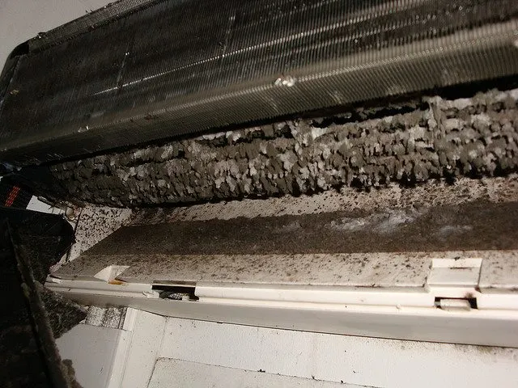
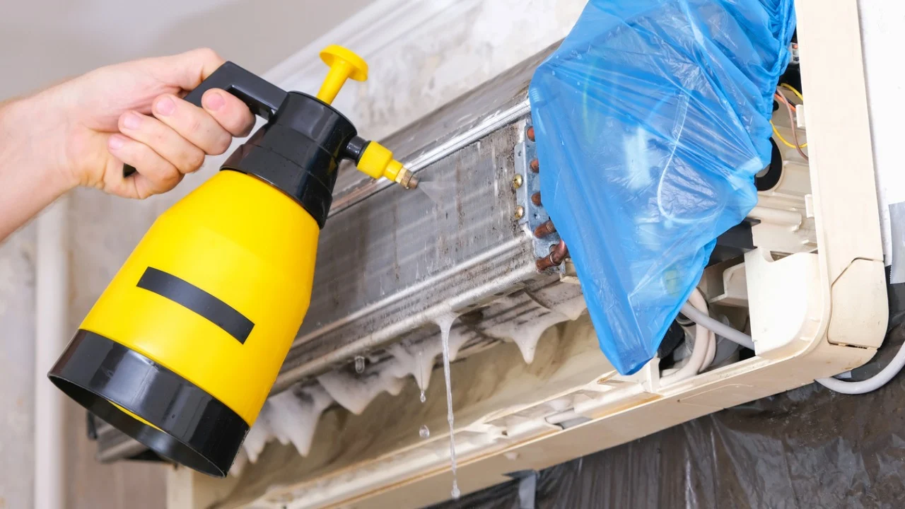

Higienização de ar-condicionado: Riscos de não fazer e benefícios que poucos consideramcos de não fazer e benefícios que poucos consideram
Publicado em · Rotiv Elétrica e Refrigeração
A higienização de ar-condicionado ainda é um tema que muita gente só leva a sério quando o aparelho começa a apresentar problemas. Mau cheiro, queda no desempenho e aumento no consumo de energia são alguns sinais comuns, mas nem sempre recebem a atenção necessária logo no início.
Seja em modelos split ou de janela, o acúmulo de sujeira é inevitável com o uso. Poeira, umidade e resíduos do ambiente vão se acumulando internamente, afetando tanto o funcionamento quanto a qualidade do ar.
Neste artigo, você vai entender o que acontece quando a higienização não é feita, quais são os principais benefícios da limpeza correta e quando realmente vale a pena procurar um serviço profissional no Rio de Janeiro.

Acúmulo de sujeira no sistema interno pode afetar o desempenho e a qualidade do ar.O que acontece quando o ar-condicionado não é higienizado?
Com o uso contínuo, o ar-condicionado passa a acumular partículas invisíveis no dia a dia. Isso inclui poeira, gordura do ambiente, poluição urbana e umidade. Em regiões como Nova Iguaçu, onde o uso do aparelho é frequente, esse processo acontece ainda mais rápido.
O problema é que essa sujeira não fica apenas no filtro. Ela se espalha por componentes internos como a evaporadora, turbina e bandeja de drenagem. Com o tempo, o sistema começa a apresentar sinais claros de desgaste.
Principais problemas causados pela falta de higienização
1. Mau cheiro ao ligar o aparelho
Um dos sinais mais comuns. O odor geralmente vem do acúmulo de sujeira e umidade, criando um ambiente propício para resíduos orgânicos dentro do equipamento.
2. Queda na capacidade de refrigeração
O ar-condicionado pode até continuar funcionando, mas com menor eficiência. Isso faz com que o ambiente demore mais para atingir a temperatura desejada.
3. Aumento no consumo de energia
Com o sistema sobrecarregado, o aparelho precisa trabalhar mais para compensar a perda de desempenho, o que pode impactar diretamente no consumo.
4. Acúmulo de sujeira no ambiente
Em vez de melhorar o ar, o equipamento pode começar a redistribuir partículas, afetando a sensação de limpeza no ambiente.

Higienização adequada remove resíduos acumulados e melhora o funcionamento do sistema.Benefícios da higienização de ar-condicionado
Ao contrário do que muitos pensam, a higienização não é apenas estética. Ela impacta diretamente no desempenho do equipamento e na experiência do usuário.
Melhor desempenho do aparelho
Um sistema limpo trabalha de forma mais eficiente, resfriando o ambiente com mais rapidez e estabilidade.
Ambiente mais agradável
A ausência de odores e a melhor circulação do ar tornam o ambiente mais confortável, seja em casa ou no trabalho.
Maior durabilidade do equipamento
A manutenção adequada reduz o desgaste de componentes internos, ajudando a prolongar a vida útil do aparelho.
Funcionamento mais equilibrado
O equipamento não precisa operar em esforço constante, o que reduz riscos de falhas ao longo do tempo.
Ar-condicionado split e de janela: ambos precisam de limpeza?
Sim. Apesar das diferenças estruturais, tanto o modelo split quanto o de janela acumulam sujeira com o uso.
| Tipo | Risco sem limpeza | Impacto |
|---|---|---|
| Split | Sujeira interna e drenagem | Perda de desempenho e odor |
| Janela | Acúmulo interno e bloqueio de fluxo | Funcionamento forçado |
Quando é o momento certo para higienizar?
Não existe um único intervalo ideal, mas alguns sinais indicam claramente a necessidade:
- Mau cheiro ao ligar
- Baixo desempenho
- Tempo excessivo para resfriar
- Longo período sem manutenção
Ignorar esses sinais tende a agravar o problema, tornando a solução mais complexa no futuro.
Limpeza básica resolve?
A limpeza dos filtros ajuda na manutenção do dia a dia, mas não substitui a higienização completa. Partes internas continuam acumulando sujeira e exigem intervenção mais técnica.
Perguntas frequentes
Ar-condicionado sujo pode parar de funcionar?
Pode contribuir para falhas, principalmente se o sistema estiver sobrecarregado.
Todo aparelho precisa de higienização?
Sim, independente do modelo.
O cheiro ruim sempre indica sujeira?
Na maioria dos casos, sim.
Limpeza melhora o desempenho?
Sim, especialmente em aparelhos com uso frequente.
Vale a pena fazer manutenção preventiva?
Sim, evita problemas maiores e custos futuros.
Precisa de profissional?
Para uma higienização completa, sim.
Conclusão
A falta de higienização do ar-condicionado pode gerar uma série de problemas que vão além do desconforto. Desde perda de desempenho até aumento no consumo, os impactos são progressivos e muitas vezes evitáveis.
Por outro lado, manter o equipamento limpo ajuda a preservar seu funcionamento, melhora o ambiente e reduz riscos de falhas inesperadas.
Para quem está em Nova Iguaçu ou no Rio de Janeiro, contar com um serviço profissional pode ser a forma mais segura de garantir que o trabalho seja feito corretamente.
Leia também
Veja também outros artigos do nosso blog:
Mora em Nova Iguaçu e precisa higienizar o seu Ar-condicionado?
A Rotiv Elétrica e Refrigeração realiza serviços de higienização com atendimento profissional na região, avaliando cada caso de forma técnica e segura.
Solicitar orçamento pelo WhatsApp